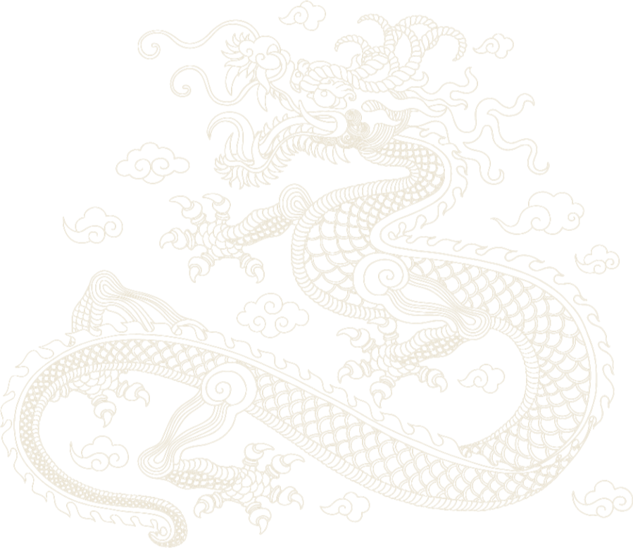

非遗工坊
课程研发、材料包配置、师资执行、现场体验、作品展示。
非遗工坊 / 广告策划 / 空间运营
专注于 探索 非遗文化 现代艺术 碰撞焕新
Exploring the renewal of intangible heritage through contemporary art.
致力于 非遗进乡村 非遗进社区 非遗进校园
Concept
A Global Narrative of Intangible Heritage
Craftsmanship · Memory · Ritual · Renewal
非遺文化 從中國走向世界，
非遺輸出的不是一件器物，而是一套完整的哲學系統。
中國非遺的底層邏輯是「人天合一」 ——
榫卯間藏著剛柔相濟的智慧，
茶道裡沉澱著和敬清寂的倫理，
織繡中凝結著物盡其用的節制。
當這些千年智慧以實物的形式漂洋過海，它們向世界傳遞的，
是另一種可能性的存在：
這不是文化的搬運，而是價值的共振 ——
讓全球共享東方的 解題思路：
讓非遺成為人類共同的精神方言。

Silent Inheritance
Operating System
From Worldly
Forms Back to Essential Craft
课程研发、材料包配置、师资执行、现场体验、作品展示。
主题活动包装、视觉传播、内容策划、品牌联动。
文化馆、商场、景区、学校与社区的长期内容更新。
Course Library
Heritage Scroll · Thousand-Year Crafts Return to Nature
Space Scenarios
Thanks
The way to begin is to make it by hand.
艺游时光陪您一起，找寻那段惊艳了时光的岁月。